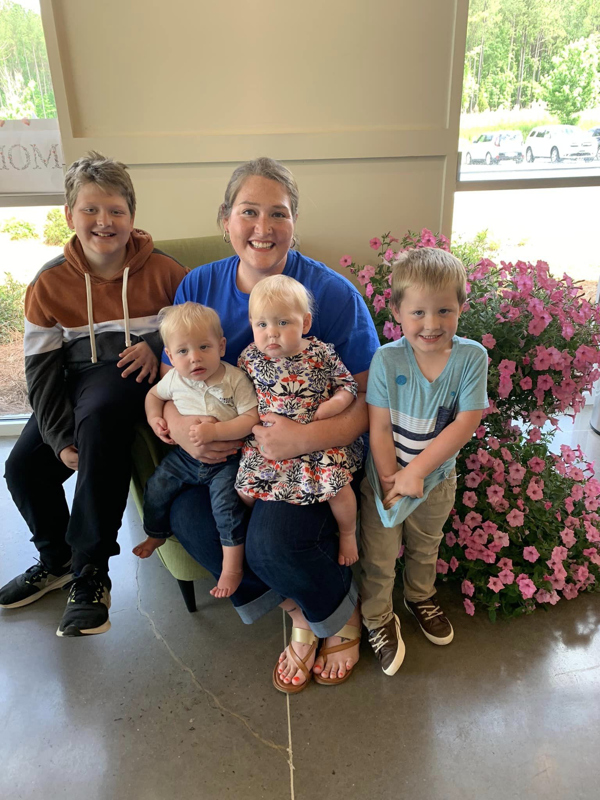

Jessica lives in Grovetown, GA with her husband, four awesome kids, fluffy cat,
and
sweet pup. She started The Messy Muffin Bake Shop in 2020 and has made many tummies happy since. In her
free
time, you can find her being a super mom at home chasing toddler twins around, attending a soccer game,
or
clapping loud for her trumpet player. She is also very involved in her church community and loves to be
with
her family. Jessica is talented in many ways and loves to show her creativity through baking; but above
any
talent she has, she is a down to earth wonderful wife, mom, sister, daughter, and friend who blesses any
life she gets to be a part of.